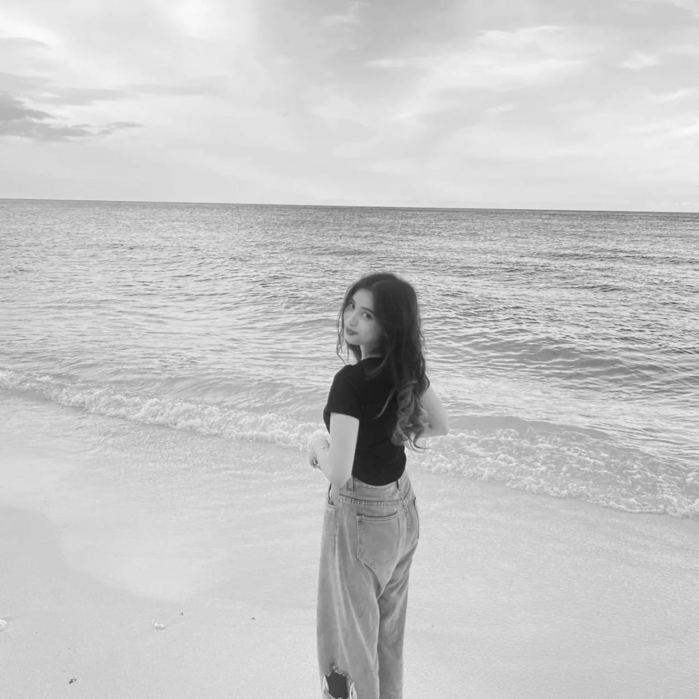

happy birthdayy yaa my girlfriend🥳🎉
uh i mean
"girl" = perempuan
"friend" = teman
so girlfriend mean is "teman perempuan" right?🤔
brarti nga termasuk my girlfriend toh?🤣 canda raaa😊
ohiya, kt mau ngucapin happy birthday buat tpe teman cwe terdebest, selamatt sudah dikepala dua yaa kakss raraa🥳 semoga tahun ini bukan sekedar pengulangan yg tahun lalu, tapi semoga di tahun ini lebih banyak hal-hal baik yg datang for raraa, tetap dikelilingi teman² yg baik dan lingkungan yg baik, smoga juga nd bnyak pusing dngan tu urusan organisasi, pokoknya doa yg trbaik for raraa😇 ohya satu lgi, jngan terlalu sering galau dng nangisin hal yg nd perlu okayy? msih bnyak diluar sana yang lebih pantas buat di nangisin😌
nah skrg tso nntau m blg apa jdi, berdoa sndiri jo neh, nnti kt bntu aminkan😇
ohiyo amper lupa, semoga bisa berjodoh dengan kairi, aamiinn😇
untuk hadiah fisiknya besok aja yaaa, itupun klo ng ada waktu sih😌
GBU yaaa 🕊
Jadi fotobox nya kapan nih kaks, biar bisa distory gitu 👀